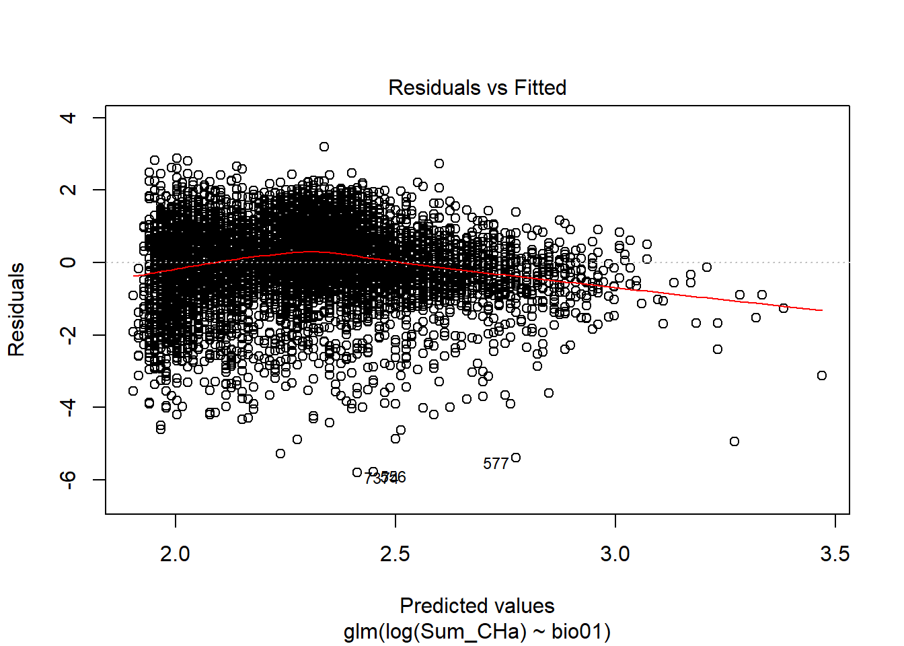
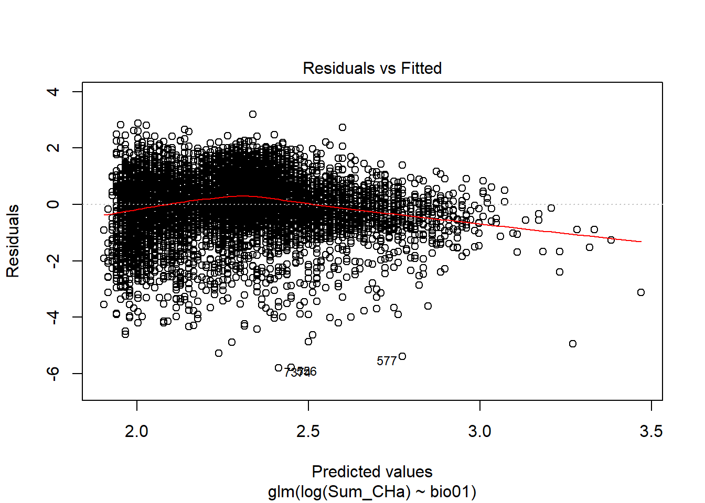

Carbon stocks assessment with National Forest Inventories Data
Loading the required Packages
library(tidyverse)
library(dplyr)
library(ggplot2)
library(stringr)
library(maps)
library(mapdata)
library(maptools)
library(sp)
library(raster)
library(BIOMASS)
library(ape)
library(magrittr)
# tinytex::install_tinytex()
library(tinytex)load the dataframe
Trees <- read.csv("Data_Output/MainFrame.csv")
Trees$District <- str_replace(Trees$District,"PYAY","Pyay")
str(Trees)## 'data.frame': 305526 obs. of 28 variables:
## $ X.5 : int 1 2 3 4 5 6 7 8 9 10 ...
## $ X.4 : int 1 2 3 4 5 6 7 8 9 10 ...
## $ X.3 : int 1 2 3 4 5 6 7 8 9 10 ...
## $ X.2 : int 1 2 3 4 5 6 7 8 9 10 ...
## $ X.1 : int 1 2 3 4 5 6 7 8 9 10 ...
## $ X : int 1 2 3 4 5 6 7 8 9 10 ...
## $ Species_Code : int 1 1 1 1 1 1 1 1 1 1 ...
## $ Species_Record: int 26 27 28 80 81 82 143 157 172 178 ...
## $ District : chr "Pyay" "Pyay" "Pyay" "Pyay" ...
## $ Township : Factor w/ 65 levels "Aunglan","Bago",..: 38 38 38 38 38 38 38 38 38 38 ...
## $ PEF_Status : Factor w/ 314 levels "Ahlaw","Aik_Ext_1",..: 176 176 176 176 176 176 176 176 176 176 ...
## $ D_ID : int 4 4 4 7 7 7 16 16 16 17 ...
## $ GISID : int 1038 1038 1038 1041 1041 1041 1050 1050 1050 1051 ...
## $ EAST : int 791564 791564 791564 789521 789521 789521 797766 797766 797766 799825 ...
## $ NORTH : num 2121421 2121421 2121421 2119348 2119348 ...
## $ ALT : Factor w/ 1427 levels "0","10","100",..: 561 561 561 680 680 680 839 839 839 879 ...
## $ LC : int 3 3 3 1 1 1 1 1 1 1 ...
## $ FT : int 63 63 63 63 63 63 63 63 63 63 ...
## $ DEN : int 0 0 0 2 2 2 1 1 1 2 ...
## $ TNO : int 1 2 3 31 32 33 24 38 53 4 ...
## $ DBH_mm : int 230 220 210 160 190 120 350 700 610 260 ...
## $ Year : int 2017 2017 2017 2017 2017 2017 2017 2017 2017 2017 ...
## $ Plot_names : Factor w/ 8166 levels "N181974E1971996",..: 1799 1799 1799 1787 1787 1787 1773 1773 1773 1774 ...
## $ Local_names : Factor w/ 464 levels "Akyaw","Akyawsi-bin",..: 121 121 121 121 121 121 121 121 121 121 ...
## $ Genus : Factor w/ 264 levels "Acacia","Acrocarpus",..: 243 243 243 243 243 243 243 243 243 243 ...
## $ Species : Factor w/ 359 levels "acerifolium",..: 118 118 118 118 118 118 118 118 118 118 ...
## $ Binomial : Factor w/ 468 levels "Acacia arabica",..: 426 426 426 426 426 426 426 426 426 426 ...
## $ DBH_cm : num 23 22 21 16 19 12 35 70 61 26 ...unique(Trees$District)## [1] "Pyay" "PyinOoLwin" "Meiktila" "Mandalay" "Kyaukse"
## [6] "Katha" "Shwebo" "Monywa" "Tamu" "Kale"
## [11] "Mawlaik" "Khamti" "Gangaw" "Pakokku" "Minbu"
## [16] "Magway" "Thayet" "Bago" "Thayarwaddy" "Taunggoo"
## [21] "Yamethin"unique(Trees$Township)## [1] Paukkaung Padaung Paungde Thabeikkyin Mogok
## [6] Singu Madaya PyinOoLwin Thazi Patheingyi
## [11] Kyaukse Myittha Banmauk Htigyaing Indaw
## [16] Katha Kawlin Pinlebu Wuntho Kyunhla
## [21] Ye_U Taze Khin-U Kani Pale
## [26] Tamu Kale Kalewa Mingin Mawlaik
## [31] Paungbyin Homalin Gangaw Htilin Pauk
## [36] Saw Seikpyu Setottaya Ngaphe Taungtwingyi
## [41] Minhla Mindon Aunglan Kamma Bago
## [46] Kyauktaga Gyobingauk Letpadan Nattalin Okpo
## [51] Tharrawaddy Taunggoo Phyu Yedashe Oktwin
## [56] Pyay Thegon Pyawbwe Yamethin Wundwin
## [61] Daik U Kantbalu Salin Wetlet Shwebo
## 65 Levels: Aunglan Bago Banmauk Daik U Gangaw Gyobingauk ... Yedashetable(Trees$Year)##
## 2010 2011 2012 2013 2014 2015 2016 2017
## 14673 7996 10031 44573 126174 47651 41252 13176Omitting the EAST and NORT with NA values and taxonomy of trees are corrected by using the to correct typos in scientific names using the Taxonomic Name Resolution Service
Trees <- Trees[!is.na(Trees$NORTH),]
sum(is.na(Trees$EAST))## [1] 0dim(Trees)## [1] 305526 28TreesNA <- Trees[Trees$Species=="NA",]
Trees <- Trees[!is.na(Trees$Species),]
str(Trees)## 'data.frame': 305526 obs. of 28 variables:
## $ X.5 : int 1 2 3 4 5 6 7 8 9 10 ...
## $ X.4 : int 1 2 3 4 5 6 7 8 9 10 ...
## $ X.3 : int 1 2 3 4 5 6 7 8 9 10 ...
## $ X.2 : int 1 2 3 4 5 6 7 8 9 10 ...
## $ X.1 : int 1 2 3 4 5 6 7 8 9 10 ...
## $ X : int 1 2 3 4 5 6 7 8 9 10 ...
## $ Species_Code : int 1 1 1 1 1 1 1 1 1 1 ...
## $ Species_Record: int 26 27 28 80 81 82 143 157 172 178 ...
## $ District : chr "Pyay" "Pyay" "Pyay" "Pyay" ...
## $ Township : Factor w/ 65 levels "Aunglan","Bago",..: 38 38 38 38 38 38 38 38 38 38 ...
## $ PEF_Status : Factor w/ 314 levels "Ahlaw","Aik_Ext_1",..: 176 176 176 176 176 176 176 176 176 176 ...
## $ D_ID : int 4 4 4 7 7 7 16 16 16 17 ...
## $ GISID : int 1038 1038 1038 1041 1041 1041 1050 1050 1050 1051 ...
## $ EAST : int 791564 791564 791564 789521 789521 789521 797766 797766 797766 799825 ...
## $ NORTH : num 2121421 2121421 2121421 2119348 2119348 ...
## $ ALT : Factor w/ 1427 levels "0","10","100",..: 561 561 561 680 680 680 839 839 839 879 ...
## $ LC : int 3 3 3 1 1 1 1 1 1 1 ...
## $ FT : int 63 63 63 63 63 63 63 63 63 63 ...
## $ DEN : int 0 0 0 2 2 2 1 1 1 2 ...
## $ TNO : int 1 2 3 31 32 33 24 38 53 4 ...
## $ DBH_mm : int 230 220 210 160 190 120 350 700 610 260 ...
## $ Year : int 2017 2017 2017 2017 2017 2017 2017 2017 2017 2017 ...
## $ Plot_names : Factor w/ 8166 levels "N181974E1971996",..: 1799 1799 1799 1787 1787 1787 1773 1773 1773 1774 ...
## $ Local_names : Factor w/ 464 levels "Akyaw","Akyawsi-bin",..: 121 121 121 121 121 121 121 121 121 121 ...
## $ Genus : Factor w/ 264 levels "Acacia","Acrocarpus",..: 243 243 243 243 243 243 243 243 243 243 ...
## $ Species : Factor w/ 359 levels "acerifolium",..: 118 118 118 118 118 118 118 118 118 118 ...
## $ Binomial : Factor w/ 468 levels "Acacia arabica",..: 426 426 426 426 426 426 426 426 426 426 ...
## $ DBH_cm : num 23 22 21 16 19 12 35 70 61 26 ...summary(Trees)## X.5 X.4 X.3 X.2
## Min. : 1 Min. : 1 Min. : 1 Min. : 1
## 1st Qu.: 76382 1st Qu.: 76382 1st Qu.: 76382 1st Qu.: 76382
## Median :152764 Median :152764 Median :152764 Median :152764
## Mean :152764 Mean :152764 Mean :152764 Mean :152764
## 3rd Qu.:229145 3rd Qu.:229145 3rd Qu.:229145 3rd Qu.:229145
## Max. :305526 Max. :305526 Max. :305526 Max. :305526
##
## X.1 X Species_Code Species_Record
## Min. : 1 Min. : 1 Min. : 1.0 Min. : 1
## 1st Qu.: 76386 1st Qu.: 76386 1st Qu.:121.0 1st Qu.: 7671
## Median :152768 Median :152768 Median :188.0 Median : 19896
## Mean :152785 Mean :152785 Mean :217.1 Mean : 36201
## 3rd Qu.:229202 3rd Qu.:229202 3rd Qu.:357.0 3rd Qu.: 53914
## Max. :305607 Max. :305607 Max. :503.0 Max. :136512
##
## District Township PEF_Status
## Length:305526 Homalin : 31066 Homalin_UCF : 17589
## Class :character Mawlaik : 23291 Paungbyin_UCF: 12061
## Mode :character Kalewa : 23284 Kalewa_UCF : 10471
## Paungbyin: 23003 Patolon : 8990
## Mingin : 20301 Yeyaman : 7881
## Banmauk : 10817 Mingin_UCF : 7403
## (Other) :173764 (Other) :241131
## D_ID GISID EAST NORTH
## Min. : 1.0 Min. : 1.0 Min. : 185000 Min. : 181974
## 1st Qu.: 214.0 1st Qu.: 134.0 1st Qu.: 627099 1st Qu.:2313500
## Median : 492.0 Median : 414.0 Median : 670000 Median :2541500
## Mean : 773.9 Mean : 586.6 Mean : 702611 Mean :2355058
## 3rd Qu.:1153.0 3rd Qu.: 878.0 3rd Qu.: 714000 3rd Qu.:2653000
## Max. :2989.0 Max. :1973.0 Max. :2199000 Max. :2824000
## NA's :86019
## ALT LC FT DEN
## 430 : 2013 Min. : 0.000 Min. : 0.00 Min. : 0.000
## 420 : 1702 1st Qu.: 1.000 1st Qu.:62.00 1st Qu.: 2.000
## 402 : 1452 Median : 1.000 Median :63.00 Median : 2.000
## 350 : 1395 Mean : 1.423 Mean :64.34 Mean : 1.971
## 320 : 1275 3rd Qu.: 1.000 3rd Qu.:63.00 3rd Qu.: 2.000
## 220 : 1217 Max. :14.000 Max. :93.00 Max. :27.000
## (Other):296472
## TNO DBH_mm Year Plot_names
## Min. : 0.00 Min. : 0.0 Min. :2010 N2475500E227000: 306
## 1st Qu.: 6.00 1st Qu.: 150.0 1st Qu.:2013 N2490500E210000: 259
## Median : 13.00 Median : 268.0 Median :2014 N2436500E222000: 252
## Mean : 18.21 Mean : 282.4 Mean :2014 N2491500E211000: 251
## 3rd Qu.: 24.00 3rd Qu.: 375.0 3rd Qu.:2015 N2467500E225000: 245
## Max. :281.00 Max. :3225.0 Max. :2017 N2499500E213000: 231
## (Other) :303982
## Local_names Genus Species
## In : 24619 Dipterocarpus: 48655 spp. : 40456
## Kanyin : 23980 Terminalia : 24113 tuberculatus : 24619
## Pyinkado: 18361 Xylia : 18361 grandis : 20984
## Kyun : 15982 Tectona : 16654 dolabriformis: 18361
## Taukkyan: 14990 Quercus : 13975 tomentosa : 15913
## Sagat : 11398 Pentacme : 10395 spicata : 11615
## (Other) :196196 (Other) :173373 (Other) :173578
## Binomial DBH_cm
## Dipterocarpus tuberculatus: 24619 Min. : 0.00
## Dipterocarpus spp. : 23980 1st Qu.: 15.00
## Xylia dolabriformis : 18361 Median : 26.80
## Tectona grandis : 15982 Mean : 28.24
## Terminalia tomentosa : 14976 3rd Qu.: 37.50
## Quercus spicata : 11398 Max. :322.50
## (Other) :196210unique(Trees$District)## [1] "Pyay" "PyinOoLwin" "Meiktila" "Mandalay" "Kyaukse"
## [6] "Katha" "Shwebo" "Monywa" "Tamu" "Kale"
## [11] "Mawlaik" "Khamti" "Gangaw" "Pakokku" "Minbu"
## [16] "Magway" "Thayet" "Bago" "Thayarwaddy" "Taunggoo"
## [21] "Yamethin"Obtaining wood density
Obtaining Wood density - getWoodDensity assigns to each taxon a species- or genus-level average if at least one wood density value in the same genus as the focal taxon is available in the reference database. For unidentified trees or if the genus is missing in the reference database, the stand-level mean wood density is assigned to the tree (based on trees for which a value was attributed).
Taxo <- correctTaxo(genus= Trees$Genus, species = Trees$Species)
Trees$genusCorr <- Taxo$genusCorrected
Trees$speciesCorr <- Taxo$speciesCorrected
APG <- getTaxonomy(Trees$genusCorr, findOrder =T)
Trees$familyAPG <- APG$family
Trees$orderAPG <- APG$order
dataWD <- getWoodDensity(genus=Trees$genusCorr,
species=Trees$speciesCorr,
stand=NULL, family = Trees$familyAPG, region = "World")
Trees <- Trees %>% mutate(DBH_cm=DBH_mm/10) %>% mutate(WD=dataWD$meanWD)Building a Diameter Height Model based on the first year data
library(lme4)
Forests <- read.csv("Data/All_data_Final.csv")
names(Forests)## [1] "Forest_type" "Plot_id" "Species_names" "Genus"
## [5] "Species" "Family" "Dbh_cm" "H_m"
## [9] "WD" "AGB" "C_Tree" "BA"
## [13] "Lat" "Long" "Northing" "Easting"
## [17] "Tenure"Forests <- filter(Forests,!is.na(Species_names) & !is.na(Dbh_cm))
summary(Forests)## Forest_type Plot_id
## Dipterocarpus_Forest :1275 Min. : 1.00
## Dry_Forest : 871 1st Qu.: 23.00
## Dry_Hill_Forest : 649 Median : 53.00
## Dry_Mixed_Deciduous_Forest :1062 Mean : 55.69
## Moist_Mixed_Deciduous_Forest: 587 3rd Qu.: 89.00
## Max. :119.00
##
## Species_names Genus
## Tectona_hamiltoniana : 613 Tectona : 865
## Shorea_obtusa : 386 Shorea : 536
## Tectona_grandis : 252 Vitex : 275
## Vitex_canescens : 211 Terminalia : 266
## Dipterocarpus_tuberculatus: 189 Dalbergia : 202
## Shorea_siamensis : 150 Dipterocarpus: 189
## (Other) :2643 (Other) :2111
## Species Family Dbh_cm
## hamiltoniana: 613 Verbenaceae :1010 Min. : 3.00
## obtusa : 386 Dipterocarpaceae: 726 1st Qu.: 10.00
## grandis : 256 Combretaceae : 294 Median : 14.50
## canescens : 211 Fabaceae : 231 Mean : 19.02
## oliveri : 195 Lamiaceae : 191 3rd Qu.: 24.00
## tuberculatus: 189 (Other) :1977 Max. :137.00
## (Other) :2594 NA's : 15
## H_m WD AGB C_Tree
## Min. : 0.3048 Min. :0.2200 Min. : 0.001082 Min. :0.000508
## 1st Qu.: 9.1440 1st Qu.:0.6014 1st Qu.: 0.042343 1st Qu.:0.019901
## Median :15.2400 Median :0.7200 Median : 0.136046 Median :0.063941
## Mean :19.5457 Mean :0.7164 Mean : 0.523717 Mean :0.246147
## 3rd Qu.:25.3049 3rd Qu.:0.8500 3rd Qu.: 0.477241 3rd Qu.:0.224303
## Max. :83.0000 Max. :1.0950 Max. :20.000150 Max. :9.400070
##
## BA Lat Long Northing
## Min. :0.000707 Min. :18.88 Min. :95.22 Min. :2089871
## 1st Qu.:0.007854 1st Qu.:20.85 1st Qu.:95.24 1st Qu.:2306949
## Median :0.016513 Median :20.89 Median :95.26 Median :2311426
## Mean :0.042563 Mean :20.66 Mean :95.34 Mean :2285967
## 3rd Qu.:0.045239 3rd Qu.:20.91 3rd Qu.:95.27 3rd Qu.:2313971
## Max. :1.474114 Max. :20.93 Max. :96.08 Max. :2316236
##
## Easting Tenure
## Min. :193210 Protected_Area :3857
## 1st Qu.:732675 Reserve : 487
## Median :734513 Unclassifed_Forest: 100
## Mean :729817
## 3rd Qu.:736259
## Max. :809669
## unique(Forests$Forest_type)## [1] Dipterocarpus_Forest Dry_Forest
## [3] Dry_Hill_Forest Dry_Mixed_Deciduous_Forest
## [5] Moist_Mixed_Deciduous_Forest
## 5 Levels: Dipterocarpus_Forest Dry_Forest ... Moist_Mixed_Deciduous_ForestSelected_Forests <- Forests %>% filter(Forest_type=="Moist_Mixed_Deciduous_Forest"| Forest_type=="Dry_Mixed_Deciduous_Forest")
LogDH_Selected_Forests <- Selected_Forests %>% mutate(LogDbh_cm=log(Dbh_cm)) %>% mutate(LogH_m=log(H_m))
ggplot(data = Selected_Forests, aes(Dbh_cm, H_m, color=Forest_type) )+ geom_point()ModelForHeight <- lmer(log(H_m)~log(Dbh_cm)+(1|Plot_id), REML = FALSE, data = Selected_Forests)
ModelForHeight## Linear mixed model fit by maximum likelihood ['lmerMod']
## Formula: log(H_m) ~ log(Dbh_cm) + (1 | Plot_id)
## Data: Selected_Forests
## AIC BIC logLik deviance df.resid
## 741.8587 763.4904 -366.9293 733.8587 1645
## Random effects:
## Groups Name Std.Dev.
## Plot_id (Intercept) 0.1359
## Residual 0.2939
## Number of obs: 1649, groups: Plot_id, 42
## Fixed Effects:
## (Intercept) log(Dbh_cm)
## 0.5622 0.6386ranef(ModelForHeight)$Plot_id[,1] %>% hist()
ModelForHeight_Log <- lmer(LogH_m~LogDbh_cm +(1|Plot_id), REML = FALSE, data = LogDH_Selected_Forests)
ModelForHeight_Log## Linear mixed model fit by maximum likelihood ['lmerMod']
## Formula: LogH_m ~ LogDbh_cm + (1 | Plot_id)
## Data: LogDH_Selected_Forests
## AIC BIC logLik deviance df.resid
## 741.8587 763.4904 -366.9293 733.8587 1645
## Random effects:
## Groups Name Std.Dev.
## Plot_id (Intercept) 0.1359
## Residual 0.2939
## Number of obs: 1649, groups: Plot_id, 42
## Fixed Effects:
## (Intercept) LogDbh_cm
## 0.5622 0.6386The best possible random effect model
summary(ModelForHeight_Log)## Linear mixed model fit by maximum likelihood ['lmerMod']
## Formula: LogH_m ~ LogDbh_cm + (1 | Plot_id)
## Data: LogDH_Selected_Forests
##
## AIC BIC logLik deviance df.resid
## 741.9 763.5 -366.9 733.9 1645
##
## Scaled residuals:
## Min 1Q Median 3Q Max
## -11.1670 -0.5243 0.0742 0.5774 2.9321
##
## Random effects:
## Groups Name Variance Std.Dev.
## Plot_id (Intercept) 0.01846 0.1359
## Residual 0.08637 0.2939
## Number of obs: 1649, groups: Plot_id, 42
##
## Fixed effects:
## Estimate Std. Error t value
## (Intercept) 0.56221 0.04809 11.69
## LogDbh_cm 0.63861 0.01424 44.86
##
## Correlation of Fixed Effects:
## (Intr)
## LogDbh_cm -0.886ranef(ModelForHeight_Log)$Plot_id[,1] %>% hist() Getting tree Height based on the best model and substracted the lowest random effect of the plot no. 115 from every plots of the dataframe that I need to predict Height. Plot no. 115 had the lowest random effect number.
Getting tree Height based on the best model and substracted the lowest random effect of the plot no. 115 from every plots of the dataframe that I need to predict Height. Plot no. 115 had the lowest random effect number.
Trees$H_pred <- predict(ModelForHeight_Log, data.frame(LogDbh_cm= log(Trees$DBH_cm), Plot_id=115))
Trees <- Trees %>%
mutate(AdjustH_Pred=exp(H_pred-0.0007450583))Testing the DBH and Height relationship for trees—–
names(Trees)## [1] "X.5" "X.4" "X.3" "X.2"
## [5] "X.1" "X" "Species_Code" "Species_Record"
## [9] "District" "Township" "PEF_Status" "D_ID"
## [13] "GISID" "EAST" "NORTH" "ALT"
## [17] "LC" "FT" "DEN" "TNO"
## [21] "DBH_mm" "Year" "Plot_names" "Local_names"
## [25] "Genus" "Species" "Binomial" "DBH_cm"
## [29] "genusCorr" "speciesCorr" "familyAPG" "orderAPG"
## [33] "WD" "H_pred" "AdjustH_Pred"ggplot(data = Trees, aes(DBH_cm, AdjustH_Pred, color=District) )+ geom_point()
Calculating the biomass of each tree
Where, D = Tree diameter (in cm), either a vector or a single value Wood density (in g/cm3), either a vector or a single value. Tree height (H in m), either a vector or a single value.
CoordsH <- cbind(Trees$EAST, Trees$NORTH)
Trees <- Trees %>% mutate(AGB=computeAGB(D = DBH_cm, WD = WD, H = AdjustH_Pred, coord = CoordsH, Dlim = NULL))
Trees <- Trees %>% mutate(Carbon_Mg= AGB*0.471)
write.csv(Trees, file = "Data_Output/Trees.csv", row.names = F)Sampling Method
image: 
1 ha sample plot with a 50m * 50 m nested plot. Therefore, the big dataframe was splitted into two. (100m x 100m and 50m x 50m)
Trees_1ha <- Trees %>% filter(DBH_mm >= 200)
Trees_50m <- Trees %>% filter(DBH_mm < 200)** Calculating the carbon per ha for two different size plots**
Plot_1ha <- Trees_1ha %>%
group_by(Plot_names,District,Year,NORTH,EAST) %>%
dplyr::summarise(C_ha = sum(Carbon_Mg))
Plot_50M <- Trees_50m %>%
group_by(Plot_names,District,Year) %>%
dplyr::summarise(C_Tree_total = sum(Carbon_Mg)) %>%
mutate(C_ha=C_Tree_total/0.25)Combining two dataframes of different plot size according to Plot names.In this process, NA values- generated were replaced with zero in order to add carbon per ha of different plot size together.
All_Plots <- full_join(Plot_1ha,Plot_50M, by= "Plot_names")
Missing_DistrictX <- is.na(All_Plots$District.x)
All_Plots$District.x[Missing_DistrictX] <- All_Plots$District.y[Missing_DistrictX]
Missing_DistrictY <- is.na(All_Plots$District.y)
All_Plots$District.y[Missing_DistrictY]<- All_Plots$District.x[Missing_DistrictY]
Missing_YearX <- is.na(All_Plots$Year.x)
All_Plots$Year.x[Missing_YearX] <- All_Plots$Year.y[Missing_DistrictX]
Missing_YearY <- is.na(All_Plots$Year.y)
All_Plots$Year.y[Missing_YearY]<- All_Plots$Year.x[Missing_YearY]
Missing_50 <- is.na(All_Plots$C_ha.y)
All_Plots$C_ha.y[Missing_50] <- 0
Missing_100 <- is.na(All_Plots$C_ha.x)
All_Plots$C_ha.x[Missing_100] <- 0
Missing_CT_total <- is.na(All_Plots$C_Tree_total)
All_Plots$C_Tree_total[Missing_CT_total] <- 0Carbon per hectare columns of the two dataframes were added together to obtain total carbon of each plot in hectare scale.
All_Plots_Carbon <- All_Plots %>% mutate(Carbon_THa = C_ha.x+ C_ha.y) %>% dplyr::select(-C_Tree_total,-District.y,-Year.y)
hist(All_Plots_Carbon$Carbon_THa, breaks=100)
Producing a clean dataframe
names(All_Plots_Carbon)[2] <- paste("Districts")
names(All_Plots_Carbon)[3] <- paste("Year")
names(All_Plots_Carbon)[6] <- paste("Carbon_100m")
names(All_Plots_Carbon)[7] <- paste("Carbon_50m")
All_Plots_Carbon <- na.omit(All_Plots_Carbon)
All_Plots_Carbon$Year <- as.factor(All_Plots_Carbon$Year)
summary(All_Plots_Carbon)## Plot_names Districts Year
## N2666000E652000: 4 Length:7946 2014 :2823
## N2724000E662000: 4 Class :character 2013 :1081
## N181974E1971996: 1 Mode :character 2015 :1012
## N182002E1970008: 1 2010 : 956
## N182004E1962006: 1 2016 : 749
## N182009E1964004: 1 2012 : 527
## (Other) :7934 (Other): 798
## NORTH EAST Carbon_100m Carbon_50m
## Min. : 181974 Min. : 185000 Min. : 0.0643 Min. : 0.0000
## 1st Qu.:2055349 1st Qu.: 630000 1st Qu.: 4.9108 1st Qu.: 0.3769
## Median :2481996 Median : 681134 Median : 9.0409 Median : 1.2860
## Mean :2127073 Mean : 845629 Mean : 13.2349 Mean : 1.5471
## 3rd Qu.:2650000 3rd Qu.: 766000 3rd Qu.: 16.9790 3rd Qu.: 2.2779
## Max. :2824000 Max. :2199000 Max. :225.6067 Max. :20.5097
##
## Carbon_THa
## Min. : 0.07938
## 1st Qu.: 6.14820
## Median : 10.51130
## Mean : 14.78200
## 3rd Qu.: 18.93314
## Max. :228.40692
## ggplot(data = All_Plots_Carbon, aes(x = Districts, y= Carbon_THa, color= Year))+
geom_boxplot()+
labs(title = "Carbon storage per ha in 21 disctricts from 2010 to 2017",
x= "District name",
y= "Carbon(t/ha)")+
theme(axis.text.x = element_text(size=7, angle = 90, vjust = 0.5),
axis.text.y = element_text(size = 7))Produce a cleaned data frame for per ha carbon for each plot
write.csv(All_Plots_Carbon,file = "Data_Output/Carbon_Per_Plots.csv",row.names = FALSE)** comparing Carbon with new model and old model for height prediction**
Comparison <- read.csv("Data_Output/Plots_Carbon.csv")
attach(Comparison)
ggplot(data=Comparison, aes(x=New_Carbon, y = Old_Carbon, color=District))+ geom_point()
detach(Comparison)Carbon according to WWF’s ecoregions
Ecoregions <- read.csv("Data_Output/Plots_WWFecoregions.csv")
Eco_Carbon <- Ecoregions %>% group_by(ECO_NAME) %>% summarise(MaxCarbon=max(New_Carbon), Count=n())
attach(Eco_Carbon)
lm.CarbonEcoregions <- lm(New_Carbon~ECO_NAME, data = Ecoregions)
anova(lm.CarbonEcoregions)## Analysis of Variance Table
##
## Response: New_Carbon
## Df Sum Sq Mean Sq F value Pr(>F)
## ECO_NAME 6 59983 9997.2 75.464 < 2.2e-16 ***
## Residuals 7874 1043115 132.5
## ---
## Signif. codes: 0 '***' 0.001 '**' 0.01 '*' 0.05 '.' 0.1 ' ' 1plot(lm.CarbonEcoregions)


boxplot(New_Carbon~ECO_NAME, data=Ecoregions)
aov.CarbonEcoregions <- aov(New_Carbon~ECO_NAME,data=Ecoregions)
TukeyHSD(aov.CarbonEcoregions)## Tukey multiple comparisons of means
## 95% family-wise confidence level
##
## Fit: aov(formula = New_Carbon ~ ECO_NAME, data = Ecoregions)
##
## $ECO_NAME
## diff
## Irrawaddy Dry Forests-Chin Hills-Arakan Yoma Montane Forests 1.4654315
## Irrawaddy Moist Deciduous Forests-Chin Hills-Arakan Yoma Montane Forests 4.8825416
## Kayah-Karen Montane Rain Forests-Chin Hills-Arakan Yoma Montane Forests 1.1121808
## Mizoram-Manipur-Kachin Rain Forests-Chin Hills-Arakan Yoma Montane Forests 8.8220339
## Myanmar Coastal Rain Forests-Chin Hills-Arakan Yoma Montane Forests 3.7521947
## Northern Indochina Subtropical Forests-Chin Hills-Arakan Yoma Montane Forests 0.5409353
## Irrawaddy Moist Deciduous Forests-Irrawaddy Dry Forests 3.4171101
## Kayah-Karen Montane Rain Forests-Irrawaddy Dry Forests -0.3532507
## Mizoram-Manipur-Kachin Rain Forests-Irrawaddy Dry Forests 7.3566024
## Myanmar Coastal Rain Forests-Irrawaddy Dry Forests 2.2867632
## Northern Indochina Subtropical Forests-Irrawaddy Dry Forests -0.9244962
## Kayah-Karen Montane Rain Forests-Irrawaddy Moist Deciduous Forests -3.7703608
## Mizoram-Manipur-Kachin Rain Forests-Irrawaddy Moist Deciduous Forests 3.9394923
## Myanmar Coastal Rain Forests-Irrawaddy Moist Deciduous Forests -1.1303469
## Northern Indochina Subtropical Forests-Irrawaddy Moist Deciduous Forests -4.3416063
## Mizoram-Manipur-Kachin Rain Forests-Kayah-Karen Montane Rain Forests 7.7098530
## Myanmar Coastal Rain Forests-Kayah-Karen Montane Rain Forests 2.6400139
## Northern Indochina Subtropical Forests-Kayah-Karen Montane Rain Forests -0.5712455
## Myanmar Coastal Rain Forests-Mizoram-Manipur-Kachin Rain Forests -5.0698392
## Northern Indochina Subtropical Forests-Mizoram-Manipur-Kachin Rain Forests -8.2810985
## Northern Indochina Subtropical Forests-Myanmar Coastal Rain Forests -3.2112594
## lwr
## Irrawaddy Dry Forests-Chin Hills-Arakan Yoma Montane Forests -1.0824394
## Irrawaddy Moist Deciduous Forests-Chin Hills-Arakan Yoma Montane Forests 3.4812067
## Kayah-Karen Montane Rain Forests-Chin Hills-Arakan Yoma Montane Forests -2.5014241
## Mizoram-Manipur-Kachin Rain Forests-Chin Hills-Arakan Yoma Montane Forests 7.3247677
## Myanmar Coastal Rain Forests-Chin Hills-Arakan Yoma Montane Forests 1.9925726
## Northern Indochina Subtropical Forests-Chin Hills-Arakan Yoma Montane Forests -1.5583522
## Irrawaddy Moist Deciduous Forests-Irrawaddy Dry Forests 1.1468506
## Kayah-Karen Montane Rain Forests-Irrawaddy Dry Forests -4.3841910
## Mizoram-Manipur-Kachin Rain Forests-Irrawaddy Dry Forests 5.0259061
## Myanmar Coastal Rain Forests-Irrawaddy Dry Forests -0.2205479
## Northern Indochina Subtropical Forests-Irrawaddy Dry Forests -3.6808247
## Kayah-Karen Montane Rain Forests-Irrawaddy Moist Deciduous Forests -7.1938930
## Mizoram-Manipur-Kachin Rain Forests-Irrawaddy Moist Deciduous Forests 2.9885777
## Myanmar Coastal Rain Forests-Irrawaddy Moist Deciduous Forests -2.4565076
## Northern Indochina Subtropical Forests-Irrawaddy Moist Deciduous Forests -6.0935882
## Mizoram-Manipur-Kachin Rain Forests-Kayah-Karen Montane Rain Forests 4.2459478
## Myanmar Coastal Rain Forests-Kayah-Karen Montane Rain Forests -0.9451086
## Northern Indochina Subtropical Forests-Kayah-Karen Montane Rain Forests -4.3347335
## Myanmar Coastal Rain Forests-Mizoram-Manipur-Kachin Rain Forests -6.4969933
## Northern Indochina Subtropical Forests-Mizoram-Manipur-Kachin Rain Forests -10.1107179
## Northern Indochina Subtropical Forests-Myanmar Coastal Rain Forests -5.2611303
## upr
## Irrawaddy Dry Forests-Chin Hills-Arakan Yoma Montane Forests 4.0133024
## Irrawaddy Moist Deciduous Forests-Chin Hills-Arakan Yoma Montane Forests 6.2838765
## Kayah-Karen Montane Rain Forests-Chin Hills-Arakan Yoma Montane Forests 4.7257858
## Mizoram-Manipur-Kachin Rain Forests-Chin Hills-Arakan Yoma Montane Forests 10.3193001
## Myanmar Coastal Rain Forests-Chin Hills-Arakan Yoma Montane Forests 5.5118168
## Northern Indochina Subtropical Forests-Chin Hills-Arakan Yoma Montane Forests 2.6402228
## Irrawaddy Moist Deciduous Forests-Irrawaddy Dry Forests 5.6873696
## Kayah-Karen Montane Rain Forests-Irrawaddy Dry Forests 3.6776896
## Mizoram-Manipur-Kachin Rain Forests-Irrawaddy Dry Forests 9.6872986
## Myanmar Coastal Rain Forests-Irrawaddy Dry Forests 4.7940742
## Northern Indochina Subtropical Forests-Irrawaddy Dry Forests 1.8318323
## Kayah-Karen Montane Rain Forests-Irrawaddy Moist Deciduous Forests -0.3468285
## Mizoram-Manipur-Kachin Rain Forests-Irrawaddy Moist Deciduous Forests 4.8904068
## Myanmar Coastal Rain Forests-Irrawaddy Moist Deciduous Forests 0.1958138
## Northern Indochina Subtropical Forests-Irrawaddy Moist Deciduous Forests -2.5896244
## Mizoram-Manipur-Kachin Rain Forests-Kayah-Karen Montane Rain Forests 11.1737583
## Myanmar Coastal Rain Forests-Kayah-Karen Montane Rain Forests 6.2251364
## Northern Indochina Subtropical Forests-Kayah-Karen Montane Rain Forests 3.1922425
## Myanmar Coastal Rain Forests-Mizoram-Manipur-Kachin Rain Forests -3.6426851
## Northern Indochina Subtropical Forests-Mizoram-Manipur-Kachin Rain Forests -6.4514792
## Northern Indochina Subtropical Forests-Myanmar Coastal Rain Forests -1.1613884
## p adj
## Irrawaddy Dry Forests-Chin Hills-Arakan Yoma Montane Forests 0.6186490
## Irrawaddy Moist Deciduous Forests-Chin Hills-Arakan Yoma Montane Forests 0.0000000
## Kayah-Karen Montane Rain Forests-Chin Hills-Arakan Yoma Montane Forests 0.9714798
## Mizoram-Manipur-Kachin Rain Forests-Chin Hills-Arakan Yoma Montane Forests 0.0000000
## Myanmar Coastal Rain Forests-Chin Hills-Arakan Yoma Montane Forests 0.0000000
## Northern Indochina Subtropical Forests-Chin Hills-Arakan Yoma Montane Forests 0.9885769
## Irrawaddy Moist Deciduous Forests-Irrawaddy Dry Forests 0.0001856
## Kayah-Karen Montane Rain Forests-Irrawaddy Dry Forests 0.9999756
## Mizoram-Manipur-Kachin Rain Forests-Irrawaddy Dry Forests 0.0000000
## Myanmar Coastal Rain Forests-Irrawaddy Dry Forests 0.1009183
## Northern Indochina Subtropical Forests-Irrawaddy Dry Forests 0.9564877
## Kayah-Karen Montane Rain Forests-Irrawaddy Moist Deciduous Forests 0.0200120
## Mizoram-Manipur-Kachin Rain Forests-Irrawaddy Moist Deciduous Forests 0.0000000
## Myanmar Coastal Rain Forests-Irrawaddy Moist Deciduous Forests 0.1543749
## Northern Indochina Subtropical Forests-Irrawaddy Moist Deciduous Forests 0.0000000
## Mizoram-Manipur-Kachin Rain Forests-Kayah-Karen Montane Rain Forests 0.0000000
## Myanmar Coastal Rain Forests-Kayah-Karen Montane Rain Forests 0.3111172
## Northern Indochina Subtropical Forests-Kayah-Karen Montane Rain Forests 0.9993956
## Myanmar Coastal Rain Forests-Mizoram-Manipur-Kachin Rain Forests 0.0000000
## Northern Indochina Subtropical Forests-Mizoram-Manipur-Kachin Rain Forests 0.0000000
## Northern Indochina Subtropical Forests-Myanmar Coastal Rain Forests 0.0000797ggplot(data=Eco_Carbon, aes(x=ECO_NAME, y = MaxCarbon, color=ECO_NAME))+ geom_point()+
labs(title = "Carbon storage according to ecoregions",
x= "Ecoregion",
y= "MaxCarbon(t/ha)")+
theme(axis.text.x = element_text(size=7, angle = 45, vjust = 0.5),
axis.text.y = element_text(size = 7))
detach(Eco_Carbon)Carbon and environmental conditions relationship
BIO1 = Annual Mean Temperature
BIO2 = Mean Diurnal Range (Mean of monthly (max temp - min temp))
BIO3 = Isothermality (BIO2/BIO7) (* 100)
BIO4 = Temperature Seasonality (standard deviation *100)
BIO5 = Max Temperature of Warmest Month
BIO6 = Min Temperature of Coldest Month
BIO7 = Temperature Annual Range (BIO5-BIO6)
BIO8 = Mean Temperature of Wettest Quarter
BIO9 = Mean Temperature of Driest Quarter
BIO10 = Mean Temperature of Warmest Quarter
BIO11 = Mean Temperature of Coldest Quarter
BIO12 = Annual Precipitation
BIO13 = Precipitation of Wettest Month
BIO14 = Precipitation of Driest Month
BIO15 = Precipitation Seasonality (Coefficient of Variation)
BIO16 = Precipitation of Wettest Quarter
BIO17 = Precipitation of Driest Quarter
BIO18 = Precipitation of Warmest Quarter
BIO19 = Precipitation of Coldest Quarter
Modelling carbon storage differences among districts and environmental impact on it
A one-way ANOVA showed that carbon storage differed significantly between districts (F=55.27, df=20,7860, p < 0.001)
C_Env <- read.csv("Data/WCL_plots.csv")
lm.CarbonDistrict <- lm(New_Carbon~District, data = C_Env)
anova(lm.CarbonDistrict)## Analysis of Variance Table
##
## Response: New_Carbon
## Df Sum Sq Mean Sq F value Pr(>F)
## District 20 136008 6800.4 55.27 < 2.2e-16 ***
## Residuals 7860 967090 123.0
## ---
## Signif. codes: 0 '***' 0.001 '**' 0.01 '*' 0.05 '.' 0.1 ' ' 1plot(lm.CarbonDistrict) 

 the test has very conclusively rejected the hypothesis that all means are equal. However, this was not due to all of the sample means being different, but rather just because one of the groups is very different from the others. In order to drill down and investigate this further we use a new test called Tukey’s range test.This will compare all of the groups in a pairwise fashion and reports on whether a significant difference exists.
the test has very conclusively rejected the hypothesis that all means are equal. However, this was not due to all of the sample means being different, but rather just because one of the groups is very different from the others. In order to drill down and investigate this further we use a new test called Tukey’s range test.This will compare all of the groups in a pairwise fashion and reports on whether a significant difference exists.
boxplot(New_Carbon~District, data=C_Env)
aov.Carbon <- aov(New_Carbon~District,data= C_Env)
TukeyHSD(aov.Carbon)## Tukey multiple comparisons of means
## 95% family-wise confidence level
##
## Fit: aov(formula = New_Carbon ~ District, data = C_Env)
##
## $District
## diff lwr upr p adj
## Gangaw-Bago 10.71646654 7.84300162 1.358993e+01 0.0000000
## Kale-Bago 8.02717596 5.82493430 1.022942e+01 0.0000000
## Katha-Bago 4.76778262 2.45112971 7.084436e+00 0.0000000
## Khamti-Bago 2.83911818 0.68767149 4.990565e+00 0.0004859
## Kyaukse-Bago 10.43712705 6.75294106 1.412131e+01 0.0000000
## Magway-Bago -0.26864783 -14.37622438 1.383893e+01 1.0000000
## Mandalay-Bago 4.35068002 -6.01921910 1.472058e+01 0.9964864
## Mawlaik-Bago 13.17243450 11.02499657 1.531987e+01 0.0000000
## Meiktila-Bago 0.67626921 -3.97639254 5.328931e+00 1.0000000
## Minbu-Bago 4.68617772 2.15626293 7.216093e+00 0.0000000
## Monywa-Bago 8.61186826 5.24094535 1.198279e+01 0.0000000
## Pakokku-Bago 2.91688192 -4.18964755 1.002341e+01 0.9973605
## Pyay-Bago 4.82901852 2.16380282 7.494234e+00 0.0000000
## PyinOoLwin-Bago 4.84752789 2.21567718 7.479379e+00 0.0000000
## Shwebo-Bago 5.95399195 2.42108993 9.486894e+00 0.0000004
## Tamu-Bago 0.97842410 -4.45837543 6.415224e+00 1.0000000
## Taunggoo-Bago 1.18809123 -0.96054130 3.336724e+00 0.9256481
## Thayarwaddy-Bago 0.06865506 -2.52869029 2.666000e+00 1.0000000
## Thayet-Bago 5.81744253 2.86072759 8.774157e+00 0.0000000
## Yamethin-Bago -1.48712252 -6.29165246 3.317407e+00 0.9999574
## Kale-Gangaw -2.68929058 -5.36409110 -1.449006e-02 0.0469162
## Katha-Gangaw -5.94868392 -8.71844387 -3.178924e+00 0.0000000
## Khamti-Gangaw -7.87734836 -10.51048572 -5.244211e+00 0.0000000
## Kyaukse-Gangaw -0.27933949 -4.26404976 3.705371e+00 1.0000000
## Magway-Gangaw -10.98511437 -25.17413849 3.203910e+00 0.4027877
## Mandalay-Gangaw -6.36578652 -16.84622054 4.114648e+00 0.8389076
## Mawlaik-Gangaw 2.45596796 -0.17389499 5.085831e+00 0.1036704
## Meiktila-Gangaw -10.04019733 -14.93427036 -5.146124e+00 0.0000000
## Minbu-Gangaw -6.03028882 -8.98073935 -3.079838e+00 0.0000000
## Monywa-Gangaw -2.10459828 -5.80159851 1.592402e+00 0.9040490
## Pakokku-Gangaw -7.79958462 -15.06645813 -5.327111e-01 0.0201487
## Pyay-Gangaw -5.88744802 -8.95470481 -2.820191e+00 0.0000000
## PyinOoLwin-Gangaw -5.86893865 -8.90724865 -2.830629e+00 0.0000000
## Shwebo-Gangaw -4.76247459 -8.60774261 -9.172066e-01 0.0018409
## Tamu-Gangaw -9.73804243 -15.38281689 -4.093268e+00 0.0000002
## Taunggoo-Gangaw -9.52837531 -12.15921382 -6.897537e+00 0.0000000
## Thayarwaddy-Gangaw -10.64781148 -13.65628158 -7.639341e+00 0.0000000
## Thayet-Gangaw -4.89902401 -8.22270461 -1.575343e+00 0.0000297
## Yamethin-Gangaw -12.20358906 -17.24225926 -7.164919e+00 0.0000000
## Katha-Kale -3.25939334 -5.32449331 -1.194293e+00 0.0000037
## Khamti-Kale -5.18805778 -7.06595023 -3.310165e+00 0.0000000
## Kyaukse-Kale 2.40995109 -1.12147689 5.941379e+00 0.6582082
## Magway-Kale -8.29582379 -22.36428046 5.772633e+00 0.8717471
## Mandalay-Kale -3.67649594 -13.99311190 6.640120e+00 0.9996323
## Mawlaik-Kale 5.14525854 3.27196015 7.018557e+00 0.0000000
## Meiktila-Kale -7.35090675 -11.88356805 -2.818245e+00 0.0000015
## Minbu-Kale -3.34099824 -5.64278581 -1.039211e+00 0.0000456
## Monywa-Kale 0.58469230 -2.61856829 3.787953e+00 1.0000000
## Pakokku-Kale -5.11029404 -12.13884426 1.918256e+00 0.5327313
## Pyay-Kale -3.19815744 -5.64787822 -7.484367e-01 0.0006169
## PyinOoLwin-Kale -3.17964807 -5.59302648 -7.662697e-01 0.0005038
## Shwebo-Kale -2.07318401 -5.44648416 1.300116e+00 0.8243557
## Tamu-Kale -7.04875185 -12.38321962 -1.714284e+00 0.0004718
## Taunggoo-Kale -6.83908473 -8.71375242 -4.964417e+00 0.0000000
## Thayarwaddy-Kale -7.95852090 -10.33422291 -5.582819e+00 0.0000000
## Thayet-Kale -2.20973343 -4.97377403 5.543072e-01 0.3386364
## Yamethin-Kale -9.51429848 -14.20271667 -4.825880e+00 0.0000000
## Khamti-Katha -1.92866443 -3.93950815 8.217928e-02 0.0793095
## Kyaukse-Katha 5.66934443 2.06545820 9.273231e+00 0.0000042
## Magway-Katha -5.03643045 -19.12325002 9.050389e+00 0.9996143
## Mandalay-Katha -0.41710260 -10.75874547 9.924540e+00 1.0000000
## Mawlaik-Katha 8.40465188 6.39809782 1.041121e+01 0.0000000
## Meiktila-Katha -4.09151341 -8.68085223 4.978254e-01 0.1574955
## Minbu-Katha -0.08160490 -2.49308544 2.329876e+00 1.0000000
## Monywa-Katha 3.84408565 0.56111583 7.127055e+00 0.0051745
## Pakokku-Katha -1.85090069 -8.91613464 5.214333e+00 0.9999973
## Pyay-Katha 0.06123590 -2.49182976 2.614302e+00 1.0000000
## PyinOoLwin-Katha 0.07974527 -2.43846991 2.597960e+00 1.0000000
## Shwebo-Katha 1.18620933 -2.26287261 4.635291e+00 0.9997830
## Tamu-Katha -3.78935851 -9.17206775 1.593351e+00 0.5981665
## Taunggoo-Katha -3.57969138 -5.58752388 -1.571859e+00 0.0000000
## Thayarwaddy-Katha -4.69912755 -7.18125818 -2.216997e+00 0.0000000
## Thayet-Katha 1.04965991 -1.80637454 3.905694e+00 0.9994246
## Yamethin-Katha -6.25490514 -10.99814006 -1.511670e+00 0.0004937
## Kyaukse-Khamti 7.59800887 4.09803199 1.109799e+01 0.0000000
## Magway-Khamti -3.10776602 -17.16836087 1.095283e+01 0.9999999
## Mandalay-Khamti 1.51156184 -8.79433063 1.181745e+01 1.0000000
## Mawlaik-Khamti 10.33331632 8.52000404 1.214663e+01 0.0000000
## Meiktila-Khamti -2.16284897 -6.67104962 2.345352e+00 0.9822903
## Minbu-Khamti 1.84705954 -0.40617827 4.100297e+00 0.2911947
## Monywa-Khamti 5.77275008 2.60419631 8.941304e+00 0.0000000
## Pakokku-Khamti 0.07776374 -6.93503690 7.090564e+00 1.0000000
## Pyay-Khamti 1.98990034 -0.41425991 4.394061e+00 0.2736891
## PyinOoLwin-Khamti 2.00840971 -0.35870877 4.375528e+00 0.2310906
## Shwebo-Khamti 3.11487377 -0.22548676 6.455234e+00 0.1051584
## Tamu-Khamti -1.86069408 -7.17439344 3.453005e+00 0.9997161
## Taunggoo-Khamti -1.65102695 -3.46575379 1.636999e-01 0.1321430
## Thayarwaddy-Khamti -2.77046312 -5.09915688 -4.417694e-01 0.0039110
## Thayet-Khamti 2.97832434 0.25458152 5.702067e+00 0.0154227
## Yamethin-Khamti -4.32624070 -8.99101505 3.385336e-01 0.1107680
## Magway-Kyaukse -10.70577488 -25.08092118 3.669371e+00 0.4829778
## Mandalay-Kyaukse -6.08644703 -16.81751981 4.644626e+00 0.9070263
## Mawlaik-Kyaukse 2.73530745 -0.76220665 6.232822e+00 0.3822519
## Meiktila-Kyaukse -9.76085784 -15.17088340 -4.350832e+00 0.0000000
## Minbu-Kyaukse -5.75094933 -9.49548990 -2.006409e+00 0.0000089
## Monywa-Kyaukse -1.82525878 -6.18234916 2.531832e+00 0.9965542
## Pakokku-Kyaukse -7.52024512 -15.14414677 1.036565e-01 0.0585126
## Pyay-Kyaukse -5.60810853 -9.44535884 -1.770858e+00 0.0000377
## PyinOoLwin-Kyaukse -5.58959916 -9.40375089 -1.775447e+00 0.0000349
## Shwebo-Kyaukse -4.48313510 -8.96671759 4.473906e-04 0.0500584
## Tamu-Kyaukse -9.45870294 -15.55623560 -3.361170e+00 0.0000065
## Taunggoo-Kyaukse -9.24903582 -12.74728352 -5.750788e+00 0.0000000
## Thayarwaddy-Kyaukse -10.36847199 -14.15889652 -6.578047e+00 0.0000000
## Thayet-Kyaukse -4.61968452 -8.66483946 -5.745296e-01 0.0078688
## Yamethin-Kyaukse -11.92424957 -17.46542482 -6.383074e+00 0.0000000
## Mandalay-Magway 4.61932785 -12.71867701 2.195733e+01 0.9999964
## Mawlaik-Magway 13.44108233 -0.61889969 2.750106e+01 0.0820645
## Meiktila-Magway 0.94491704 -13.70837153 1.559821e+01 1.0000000
## Minbu-Magway 4.95482555 -9.16863272 1.907828e+01 0.9997082
## Monywa-Magway 8.88051610 -5.41755112 2.317858e+01 0.8105841
## Pakokku-Magway 3.18552976 -12.42133943 1.879240e+01 1.0000000
## Pyay-Magway 5.09766635 -9.05065438 1.924599e+01 0.9995682
## PyinOoLwin-Magway 5.11617572 -9.02589778 1.925825e+01 0.9995419
## Shwebo-Magway 6.22263978 -8.11447992 2.055976e+01 0.9945930
## Tamu-Magway 1.24707194 -13.67373213 1.616788e+01 1.0000000
## Taunggoo-Magway 1.45673907 -12.60342546 1.551690e+01 1.0000000
## Thayarwaddy-Magway 0.33730290 -13.79838979 1.447300e+01 1.0000000
## Thayet-Magway 6.08609036 -8.12002692 2.029221e+01 0.9954093
## Yamethin-Magway -1.21847469 -15.92068924 1.348374e+01 1.0000000
## Mawlaik-Mandalay 8.82175448 -1.48330187 1.912681e+01 0.2166578
## Meiktila-Mandalay -3.67441081 -14.77530978 7.426488e+00 0.9998786
## Minbu-Mandalay 0.33549770 -10.05599716 1.072699e+01 1.0000000
## Monywa-Mandalay 4.26118824 -6.36640875 1.488879e+01 0.9980671
## Pakokku-Mandalay -1.43379810 -13.76609138 1.089850e+01 1.0000000
## Pyay-Mandalay 0.47833850 -9.94692271 1.090360e+01 1.0000000
## PyinOoLwin-Mandalay 0.49684787 -9.91993353 1.091363e+01 1.0000000
## Shwebo-Mandalay 1.60331193 -9.07676734 1.228339e+01 1.0000000
## Tamu-Mandalay -3.37225591 -14.82395823 8.079446e+00 0.9999809
## Taunggoo-Mandalay -3.16258879 -13.46789414 7.142717e+00 0.9999628
## Thayarwaddy-Mandalay -4.28202496 -14.69014196 6.126092e+00 0.9972780
## Thayet-Mandalay 1.46676251 -9.03680164 1.197033e+01 1.0000000
## Yamethin-Mandalay -5.83780254 -17.00320466 5.327600e+00 0.9561889
## Meiktila-Mawlaik -12.49616529 -17.00245421 -7.989876e+00 0.0000000
## Minbu-Mawlaik -8.48625678 -10.73566723 -6.236846e+00 0.0000000
## Monywa-Mawlaik -4.56056624 -7.72639942 -1.394733e+00 0.0000559
## Pakokku-Mawlaik -10.25555257 -17.26712441 -3.243981e+00 0.0000369
## Pyay-Mawlaik -8.34341598 -10.74398950 -5.942842e+00 0.0000000
## PyinOoLwin-Mawlaik -8.32490661 -10.68838216 -5.961431e+00 0.0000000
## Shwebo-Mawlaik -7.21844255 -10.55622253 -3.880663e+00 0.0000000
## Tamu-Mawlaik -12.19401039 -17.50608792 -6.881933e+00 0.0000000
## Taunggoo-Mawlaik -11.98434327 -13.79431572 -1.017437e+01 0.0000000
## Thayarwaddy-Mawlaik -13.10377944 -15.42877006 -1.077879e+01 0.0000000
## Thayet-Mawlaik -7.35499197 -10.07556944 -4.634415e+00 0.0000000
## Yamethin-Mawlaik -14.65955702 -19.32248383 -9.996630e+00 0.0000000
## Minbu-Meiktila 4.00990851 -0.69068922 8.710506e+00 0.2222762
## Monywa-Meiktila 7.93559905 2.73384248 1.313736e+01 0.0000109
## Pakokku-Meiktila 2.24061271 -5.89559717 1.037682e+01 0.9999936
## Pyay-Meiktila 4.15274931 -0.62203078 8.927529e+00 0.1922705
## PyinOoLwin-Meiktila 4.17125868 -0.58497811 8.927495e+00 0.1800936
## Shwebo-Meiktila 5.27772274 -0.03043578 1.058588e+01 0.0534514
## Tamu-Meiktila 0.30215489 -6.42494993 7.029260e+00 1.0000000
## Taunggoo-Meiktila 0.51182202 -3.99503630 5.018680e+00 1.0000000
## Thayarwaddy-Meiktila -0.60761415 -5.34484468 4.129616e+00 1.0000000
## Thayet-Meiktila 5.14117332 0.19776221 1.008458e+01 0.0308317
## Yamethin-Meiktila -2.16339173 -8.39064298 4.063860e+00 0.9997477
## Monywa-Minbu 3.92569054 0.48890731 7.362474e+00 0.0078432
## Pakokku-Minbu -1.76929580 -8.90730104 5.368709e+00 0.9999989
## Pyay-Minbu 0.14284080 -2.60520077 2.890882e+00 1.0000000
## PyinOoLwin-Minbu 0.16135017 -2.55434419 2.877045e+00 1.0000000
## Shwebo-Minbu 1.26781423 -2.32798254 4.863611e+00 0.9996857
## Tamu-Minbu -3.70775362 -9.18563157 1.770124e+00 0.6733676
## Taunggoo-Minbu -3.49808649 -5.74863742 -1.247536e+00 0.0000061
## Thayarwaddy-Minbu -4.61752266 -7.29979047 -1.935255e+00 0.0000002
## Thayet-Minbu 1.13126481 -1.90032239 4.162852e+00 0.9992848
## Yamethin-Minbu -6.17330024 -11.02426568 -1.322335e+00 0.0010648
## Pakokku-Monywa -5.69498634 -13.17253749 1.782565e+00 0.4364814
## Pyay-Monywa -3.78284974 -7.32041739 -2.452821e-01 0.0212195
## PyinOoLwin-Monywa -3.76434038 -7.27683924 -2.518415e-01 0.0205764
## Shwebo-Monywa -2.65787631 -6.88781801 1.572065e+00 0.7946217
## Tamu-Monywa -7.63344416 -13.54697097 -1.719917e+00 0.0007884
## Taunggoo-Monywa -7.42377703 -10.59042066 -4.257133e+00 0.0000000
## Thayarwaddy-Monywa -8.54321320 -12.02993272 -5.056494e+00 0.0000000
## Thayet-Monywa -2.79442574 -6.55649609 9.676446e-01 0.4884363
## Yamethin-Monywa -10.09899079 -15.43701645 -4.760965e+00 0.0000000
## Pyay-Pakokku 1.91213660 -5.27493685 9.099210e+00 0.9999964
## PyinOoLwin-Pakokku 1.93064596 -5.24412150 9.105413e+00 0.9999957
## Shwebo-Pakokku 3.03711003 -4.51484645 1.058907e+01 0.9979875
## Tamu-Pakokku -1.93845782 -10.54714176 6.670226e+00 0.9999998
## Taunggoo-Pakokku -1.72879069 -8.74072849 5.283147e+00 0.9999990
## Thayarwaddy-Pakokku -2.84822686 -10.01040899 4.313955e+00 0.9982698
## Thayet-Pakokku 2.90056060 -4.39963208 1.020075e+01 0.9982903
## Yamethin-Pakokku -4.40400445 -12.62800335 3.819994e+00 0.9447452
## PyinOoLwin-Pyay 0.01850937 -2.82365561 2.860674e+00 1.0000000
## Shwebo-Pyay 1.12497343 -2.56726983 4.817217e+00 0.9999669
## Tamu-Pyay -3.85059442 -9.39225958 1.691071e+00 0.6238467
## Taunggoo-Pyay -3.64092729 -6.04256951 -1.239285e+00 0.0000131
## Thayarwaddy-Pyay -4.76036346 -7.57060659 -1.950120e+00 0.0000003
## Thayet-Pyay 0.98842401 -2.15695782 4.133806e+00 0.9999459
## Yamethin-Pyay -6.31614104 -11.23902348 -1.393259e+00 0.0008974
## Shwebo-PyinOoLwin 1.10646406 -2.56176762 4.774696e+00 0.9999718
## Tamu-PyinOoLwin -3.86910378 -9.39479977 1.656592e+00 0.6088275
## Taunggoo-PyinOoLwin -3.65943665 -6.02399767 -1.294876e+00 0.0000070
## Thayarwaddy-PyinOoLwin -4.77887283 -7.55749297 -2.000253e+00 0.0000002
## Thayet-PyinOoLwin 0.96991464 -2.14724597 4.087075e+00 0.9999537
## Yamethin-PyinOoLwin -6.33465041 -11.23954948 -1.429751e+00 0.0007799
## Tamu-Shwebo -4.97556784 -10.98290292 1.031767e+00 0.2724847
## Taunggoo-Shwebo -4.76590072 -8.10444940 -1.427352e+00 0.0000713
## Thayarwaddy-Shwebo -5.88533689 -9.52889125 -2.241783e+00 0.0000017
## Thayet-Shwebo -0.13654942 -4.04441953 3.771321e+00 1.0000000
## Yamethin-Shwebo -7.44111447 -12.88287829 -1.999351e+00 0.0002120
## Taunggoo-Tamu 0.20966713 -5.10289344 5.522228e+00 1.0000000
## Thayarwaddy-Tamu -0.90976904 -6.41911391 4.599576e+00 1.0000000
## Thayet-Tamu 4.83901842 -0.84858575 1.052662e+01 0.2265819
## Yamethin-Tamu -2.46554663 -9.29856836 4.367475e+00 0.9995589
## Thayarwaddy-Taunggoo -1.11943617 -3.44553022 1.206658e+00 0.9816669
## Thayet-Taunggoo 4.62935129 1.90783079 7.350872e+00 0.0000003
## Yamethin-Taunggoo -2.67521375 -7.33869084 1.988263e+00 0.8976146
## Thayet-Thayarwaddy 5.74878746 2.66070473 8.836870e+00 0.0000000
## Yamethin-Thayarwaddy -1.55577758 -6.44224867 3.330694e+00 0.9999335
## Yamethin-Thayet -7.30456505 -12.39117099 -2.217959e+00 0.0000609I performed a simple liner regression analysis on the two variables Carbon and Annual precipitaion(AP)/Annual Mean Temperature(AMT). I wish to determine wheter the AP/AMT varible is a significant predictor of the Carbon Variable.
plot(New_Carbon~bio12, data = C_Env)
lm.AMP <- lm(New_Carbon~bio12, data=C_Env)
anova(lm.AMP)## Analysis of Variance Table
##
## Response: New_Carbon
## Df Sum Sq Mean Sq F value Pr(>F)
## bio12 1 9514 9513.7 68.543 < 2.2e-16 ***
## Residuals 7879 1093585 138.8
## ---
## Signif. codes: 0 '***' 0.001 '**' 0.01 '*' 0.05 '.' 0.1 ' ' 1plot(New_Carbon~bio01, data = C_Env)
lm.AMT <- lm(New_Carbon~bio01, data=C_Env)
anova(lm.AMT)## Analysis of Variance Table
##
## Response: New_Carbon
## Df Sum Sq Mean Sq F value Pr(>F)
## bio01 1 1617 1616.6 11.564 0.0006759 ***
## Residuals 7879 1101482 139.8
## ---
## Signif. codes: 0 '***' 0.001 '**' 0.01 '*' 0.05 '.' 0.1 ' ' 1ggplot(data=C_Env, aes(x=bio12, y = New_Carbon, color=District))+ geom_point()+
labs(title = "Carbon storage and Annual Precipitation Relationship",
x= "Annual Annual Precipitation (mm)",
y= "MaxCarbon(t/ha)")+
theme(axis.text.x = element_text(size=7, angle = 45, vjust = 0.5),
axis.text.y = element_text(size = 7))
# According to Year
ggplot(data=C_Env, aes(x=bio01, y = New_Carbon, color=District))+ geom_line()+
facet_wrap(facets = vars(Year))+
labs(title = "Carbon storage and Annual Mean Temperature Relationship",
x= "Annual Mean Temperature",
y= "MaxCarbon(t/ha)")+
theme(axis.text.x = element_text(size=7, angle = 45, vjust = 0.5),
axis.text.y = element_text(size = 7))
# According to Districts
ggplot(data=C_Env, aes(x=bio01, y = New_Carbon, color=District))+ geom_line()+
facet_wrap(facets = vars(District))+
labs(title = "Carbon storage and Annual Mean Temperature Relationship",
x= "Annual Mean Temperature",
y= "MaxCarbon(t/ha)")+
theme(axis.text.x = element_text(size=7, angle = 45, vjust = 0.5),
axis.text.y = element_text(size = 7))